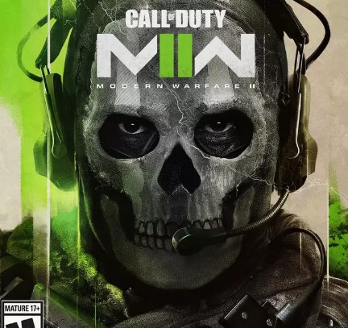

My first series is CALL OF DUTY6: MODERN WARFARE2 and it is also my favourite series
Since I bought call of duty16: MODERN WARFARE, I found it to be a wonderful game and I begun to play multiplayer mode
I also bought call of duty19: MODERN WARFARE2, its multiplayer Mode is also very fun.
Meditation
Czardas
Harvest Song of the Fisherman(丰收渔歌)